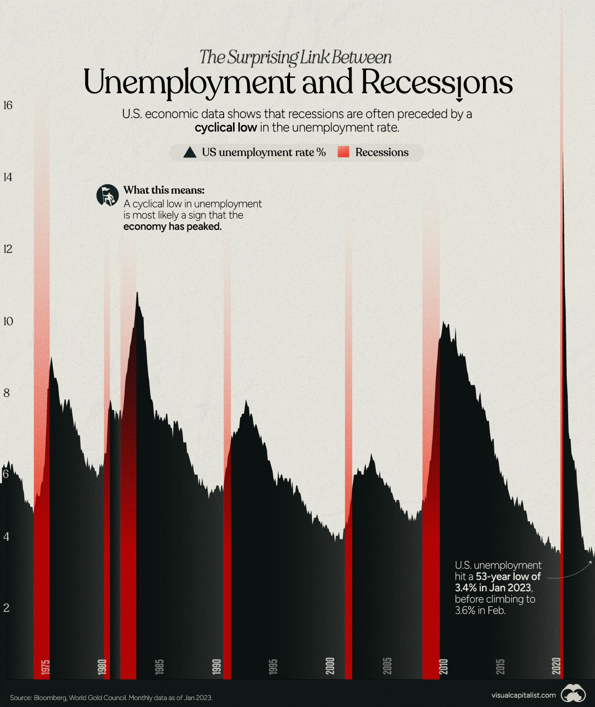
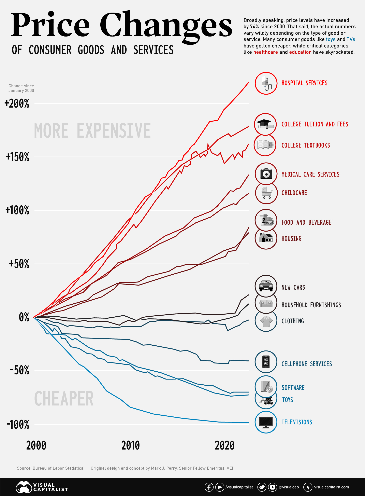
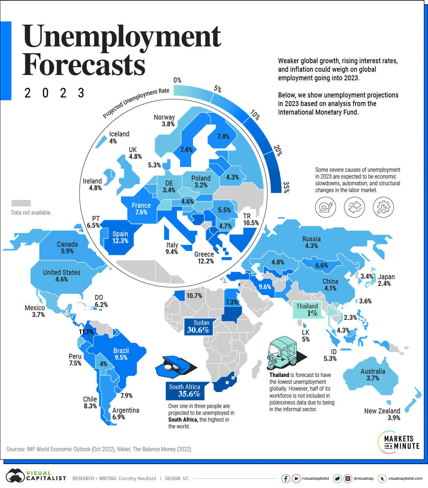

Quando os preços sobem e o emprego entra na conversa
A aula organiza o tema em cinco blocos: conceito de inflação, distorções provocadas, causas, imposto inflacionário e curva de Phillips. Em bom português: primeiro se entende o fenômeno, depois os estragos, as origens e, por fim, a conexão entre inflação, desemprego e política econômica.
aumento contínuo e generalizado dos preços
renda, balanço de pagamentos, expectativas e capitais
trade-off e curva de Phillips
Frase-guia: no curto prazo alguns grupos podem até parecer ganhar com a inflação, mas no longo prazo ninguém ganha; ela desorganiza o sistema econômico, corrói salários e compromete produção e emprego.
O que é inflação?
Definição central
Inflação é o aumento contínuo e generalizado no nível de preços.
Não é a alta isolada de um produto; é um movimento persistente que afeta o conjunto da economia.
Chave de leitura
Quando a inflação acelera, o valor da moeda se deteriora. Isso mexe com salários reais, decisões de investimento, comércio exterior e expectativas sobre o futuro.
Os efeitos da inflação sobre a economia
Distribuição de renda
Os trabalhadores de baixa renda tendem a perder mais, porque gastam quase toda a renda em subsistência e têm pouca proteção financeira. Empresas com poder de repasse e o governo podem mitigar melhor suas perdas no curto prazo.
Balanço de pagamentos
Se os preços internos sobem mais que os internacionais, o produto nacional encarece, a importação é estimulada e a exportação perde competitividade. Isso pode piorar a balança comercial.
Expectativas e investimento
Ambiente inflacionário aumenta incertezas, compromete a produção futura, reduz previsibilidade e afeta decisões de investimento e nível de emprego.
Mercado de capitais
Com a deterioração do valor da moeda, pode haver estímulo à aplicação em bens reais, como terra e imóveis, e desestímulo às aplicações financeiras, salvo quando mecanismos de correção monetária atenuam esse efeito.
Conclusão de longo prazo
Mesmo que alguns setores consigam ganhos momentâneos, no longo prazo a inflação corrói salários, reduz consumo, compromete vendas e enfraquece a arrecadação. É aquela “vantagem” que chega cobrando juros — e ainda sem carência.
Por que a inflação acontece?
A aula destaca três núcleos explicativos: inflação de demanda, inflação de custos e outras causas, como inércia e expectativas.
Inflação de demanda
É o clássico caso de “dinheiro demais à procura de poucos bens”. Surge quando a demanda agregada excede a produção disponível, sobretudo quando a economia está próxima do pleno emprego.
Abaixo do pleno emprego, aumentos de demanda podem elevar produção e emprego sem necessariamente gerar alta generalizada de preços.
Política usual
Como a demanda agregada reage mais rapidamente às políticas econômicas que a oferta agregada no curto prazo, o combate costuma envolver medidas para reduzir a procura por bens e serviços.
Inflação de custos
É uma inflação de oferta. A demanda não precisa subir; basta que custos de certos insumos aumentem e sejam repassados aos preços finais.
Também pode estar associada a estruturas de mercado com monopólio ou oligopólio, capazes de elevar margens acima do aumento de custos.
Choques e controle
Choques de matérias-primas, como petróleo ou produtos agrícolas, podem deflagrar esse processo. A aula cita políticas de controle direto de preços, política salarial rígida e fiscalização de lucros como respostas possíveis.
Inércia inflacionária
Perpetuação das taxas passadas: a inflação de ontem é repassada para os preços de hoje.
Inflação de expectativas
Agentes elevam preços hoje porque esperam inflação maior amanhã, tentando proteger margens de lucro e poder de compra.
Quem paga a conta silenciosa?
Ideia central
O imposto inflacionário é uma receita para o governo derivada do monopólio de emissão de moeda. Ao pagar compromissos com moeda emitida a custo quase nulo, o governo se beneficia da perda de poder de compra dos saldos monetários do público.
Por que é regressivo?
Porque recai com maior intensidade sobre as classes de renda mais baixa, que mantêm menos aplicações financeiras e têm menos instrumentos para se proteger da corrosão inflacionária.
Leitura distributiva: sem inflação — e, portanto, sem imposto inflacionário — o consumo das classes sociais mais baixas tende a ser maior, pois menos renda é perdida na erosão do poder de compra.
A curva de Phillips
A curva de Phillips expressa a relação inversa entre inflação e desemprego, isto é, um possível trade-off entre essas variáveis, sobretudo no curto prazo.
Versão intuitiva
Abaixo do pleno emprego, a economia pode aumentar produção e emprego com preços relativamente rígidos, na tradição keynesiana. Próximo do pleno emprego, aumentos de demanda tendem a pressionar mais os preços do que a produção.
Versão moderna
π: inflação; πᵉ: inflação esperada; U: desemprego; Uₙ: desemprego natural; E: choques de oferta.

Problemas contemporâneos
A própria aula mostra que o trade-off entre inflação e desemprego não é tão claro na realidade recente. Mudanças no poder de barganha dos trabalhadores, choques de oferta e respostas do banco central podem enfraquecer a relação tradicional.
Ligação com política monetária
Se o banco central eleva juros para combater a inflação, pode esfriar a demanda agregada, reduzir a pressão sobre os preços e, ao mesmo tempo, aumentar o risco de desaceleração e desemprego.


O que precisa ficar
20 questões para revisar a aula
A maioria pode ser respondida diretamente com o material; as últimas exigem integração dos conceitos.